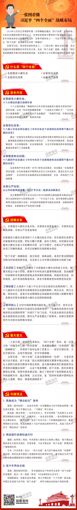

学习 · 资料
习近平“四个全面”战略布局（图）

一张图看懂习近平“四个全面”战略布局
从今天(3日)起，中国进入2015年全国两会时间。党的十八大之后，习近平总书记站在时代发展和战略全局的高度，提出中华民族伟大复兴的“中国梦”。2014年底，习近平提出了“四个全面”的思想，为实现这一梦想做了战略总布局。
今年两会不涉及换届，属于传统意义上的“平年例会”，但春节后上班第一天，中共中央机关报《人民日报》连续发表评论员文章，论述“四个全面”战略——即全面建成小康社会、全面深化改革、全面推进依法治国、全面从严治党的深刻意义，称其为“我们党治国理政方略与时俱进的新创造、马克思主义与中国实践相结合的新飞跃”。随后，国内外各大媒体对习近平总书记提出的“四个全面”进行聚焦解读。
新华网评论认为，今年的两会，既是深入研读认识“四个全面”的重要场合，也是凝聚力量推动落实“四个全面”的宽广平台。人民网则称，今年的全国两会，适逢新一届中央领导集体履新以来承上启下的关键之年。从微观层面观察，是经济新常态、制度反腐、公正司法、农村土地改革、户籍制度改革、雾霾治理等公众热议主题；从宏观层面梳理也会发现，这些热点话题无不统一于“四个全面”的战略布局。作为法治意义上全年国家各项工作的开启点，两会就“四个全面”激荡出和声共鸣，不仅是牵好今年改革发展的“牛鼻子”的关键，也是“四个全面”在全面落实、协调推进的起点上迈好第一步的关键。
那么，习近平“四个全面”战略布局到底是什么？四个全面之间有什么逻辑关系？有什么重大意义？外媒如何看待？观察者网带你一一看来。